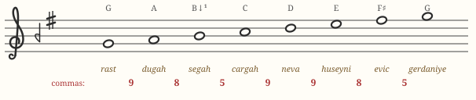
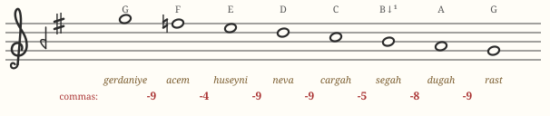
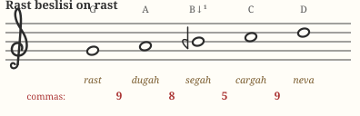
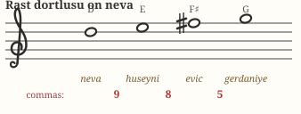
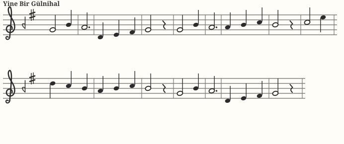

Chapter 05 · first makamMakam Rast
Rast — Persian for “right, straight, true” — is the reference point of the entire system, often called the mother of makams. Bright and dignified without the sharpened edge of a Western major key, it is the sound of ceremonial openings, of morning, of things set in proper order.
Identity card
| Tonic (durak) | rast — written G |
|---|---|
| Dominant (güçlü) | nevâ — D, the 5th degree |
| Leading tone (yeden) | ırak — F♯ (bakiye) below the tonic |
| Construction | Rast beşli on rast + Rast dörtlü on nevâ |
| Seyir direction | ascending (çıkıcı) |
| Key signature |  segâh (B −1) + eviç (F +4) segâh (B −1) + eviç (F +4) |
The scale
Ascending, Rast stacks two copies of its own genus — T·K·S — a fifth apart:

Play both clips. Western G major puts its third (B) and seventh (F♯) noticeably higher; Rast's segâh and eviç sit a comma lower, rounding the scale's corners. That one-comma difference is the difference between “major key” and “Rast.”
Descending, Rast famously softens further: the leading note eviç (F♯) is replaced by acem (F♮), so melodies relax on the way down:

Explore the degrees one by one — the tonic and güçlü chips have thick borders:
The two genera
Both halves of Rast are the same shape — which is why the makam feels so unified and stable:


Seyir: how Rast moves
Rast is an ascending makam: melodies typically begin around the tonic, establish the lower pentachord, climb to the güçlü nevâ for a mid-point cadence (asma karar), push up toward gerdaniye using bright eviç, then descend — now through gentle acem — to a full cadence (karar) on rast, often approached from below via the leading tone ırak.

Play it yourself
This is a live instrument tuned to Rast's exact comma pitches. Use your computer keyboard — the home row A S D F G H J K L ; ' — or click and hold the keys on screen. Hold for sustain; chords work too.
Thick border = tonic · double border = güçlü · dashed = yeden. Try the classic descent H G F D S (nevâ → rast), then the cadence A → S (ırak rising home). The dotted keys on the row above are Rast's two microtonal notes rendered in piano tuning: alternate F / R (segâh vs. piano B) and L / O (eviç vs. piano F♯) to hear exactly one comma.
Repertoire to listen for
| Piece | What it is |
|---|---|
| “Yine Bir Gülnihal” — Hammâmîzâde İsmail Dede Efendi | Perhaps the most beloved Rast song in the classical repertoire; a lilting waltz-like şarkı. A perfect first listen. |
| Itrî — Na't-ı Mevlânâ | The monumental Rast opening of the Mevlevi ceremony; Rast in its most solemn dress. |
| The call to prayer (ezan) | The salâ and several of the daily calls are traditionally rendered in Rast in Turkey — listen for the rounded third. |
Hear it: Yine Bir Gülnihal
The opening of Dede Efendi's beloved şarkı, from the standard notation (SymbTr corpus). Watch the melody establish rast, lean on segâh, dip below the tonic through D–E–F♯ (yegâh → ırak), and settle — pure Rast seyir in a real composition:

Search any streaming service for these titles; for scores, the TRT archive notation circulates freely online (e.g., divanmakam.com and neyzen.com).